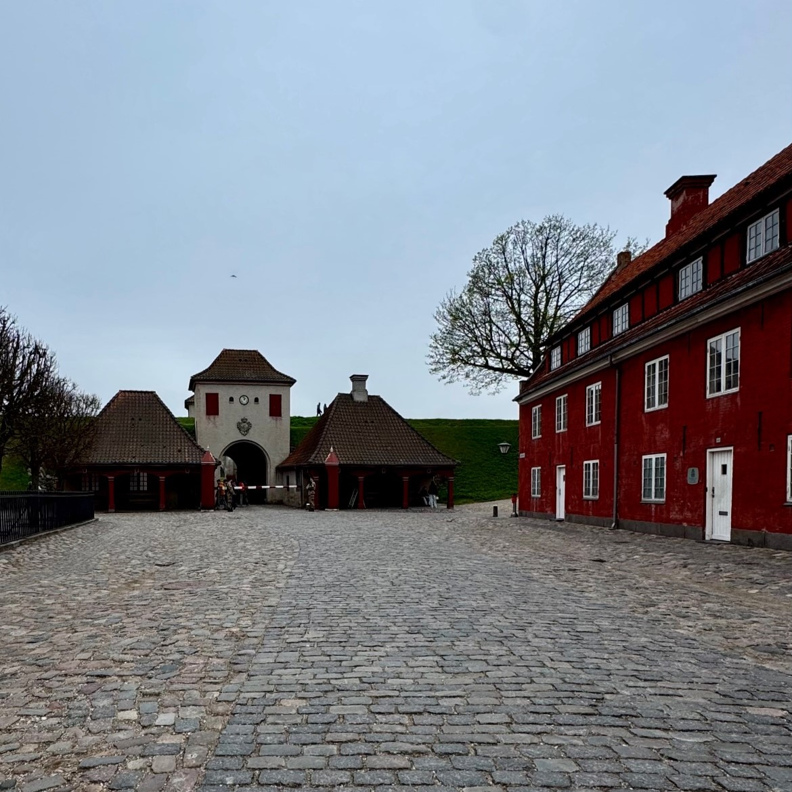
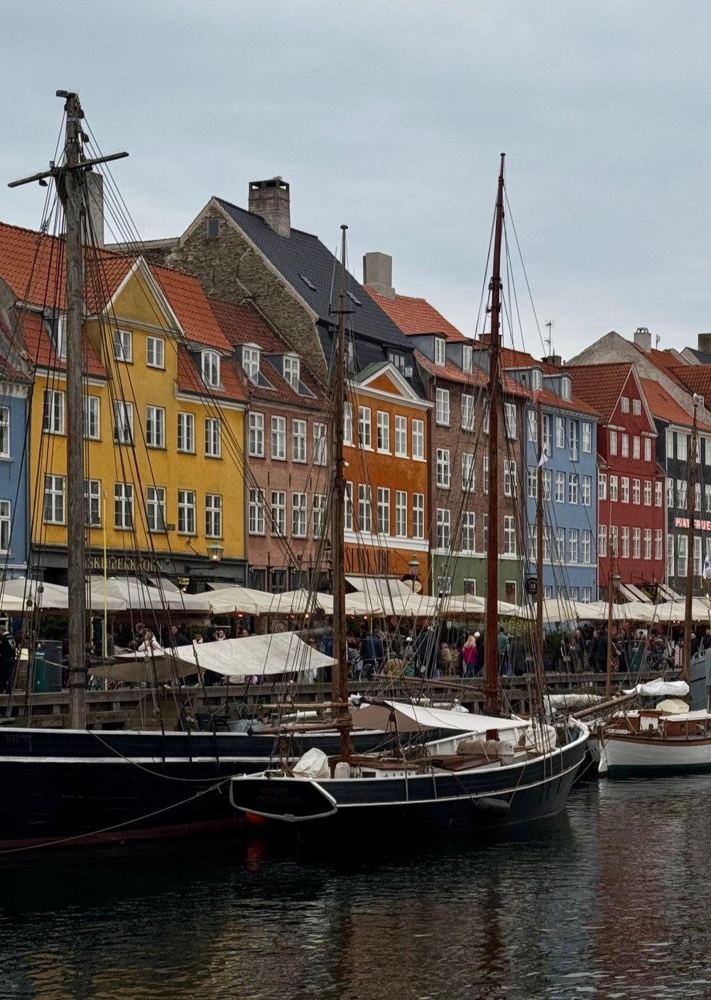
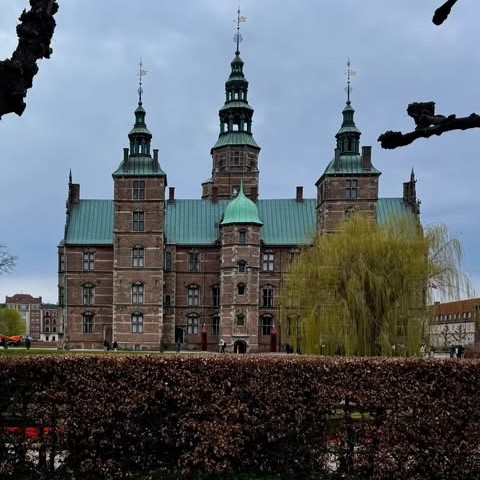
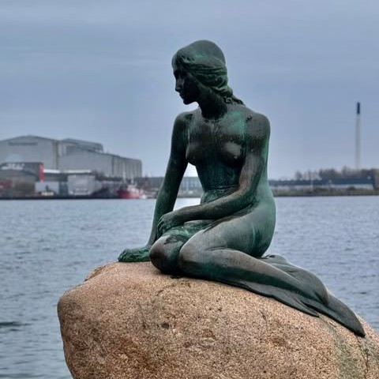

Danimarca: La capitale Copenaghen
Un viaggio di 3 giorni tra canali, palazzi reali e parchi in fiore nella capitale danese
Panoramica dell'Itinerario
Questo itinerario ti porterà attraverso i luoghi più iconici di Copenaghen, dal coloratissimo porto di Nyhavn al Castello di Rosenborg, passando per chiese di marmo, palazzi reali e il leggendario parco Tivoli. Il terzo giorno, con i ciliegi in piena fioritura tipica di aprile, si trasforma in una passeggiata quasi surreale fino alla Sirenetta e al bastione stellato del Kastellet. La capitale danese è una città a misura d'uomo, vivace ma mai caotica, dove si cammina volentieri e si scopre qualcosa di inaspettato praticamente a ogni angolo.
Itinerario Giorno per Giorno
Arrivo a Copenaghen

Attività:
- Pomeriggio: Arrivo all'aeroporto di Copenaghen (Kastrup) e trasferimento verso il centro città. Il modo più semplice ed economico è il treno diretto: le macchinette per acquistare il biglietto si trovano direttamente in aeroporto, il costo è di circa 4€ e in pochi minuti si arriva alla Stazione Centrale. L'hotel si trova nelle vicinanze della stazione, un'ottima posizione sia per comodità logistica che per i prezzi generalmente più contenuti rispetto al centro. Lasciare le valigie in camera, fare un rapido check-in e uscire subito: la città aspetta.
- Sera: La prima tappa obbligata è Nyhavn, il canale simbolo di Copenaghen con le sue case colorate che si specchiano nell'acqua. È il posto perfetto per un aperitivo seduti lungo il molo, magari con una birra danese in mano mentre il sole cala lentamente. L'atmosfera è molto vivace ma allo stesso tempo rilassata, piena di locali, turisti e gente del posto. Se hai fame, puoi tranquillamente cenare qui in uno dei tanti ristoranti affacciati sul canale: i prezzi non sono economicissimi, ma la location vale il costo del biglietto.
Monumenti, shopping e Tivoli

Attività:
- Mattina: Giornata che inizia con il Copenhagen City Hall, il maestoso municipio che si affaccia sulla piazza principale della città. Da lì ci si sposta al Glyptoteket Museum, uno dei musei più raffinati di Copenaghen, con una collezione di sculture antiche e arte impressionista ospitata in un edificio splendido. Poco distante si trova il National Museum of Denmark, ottimo per capire la storia danese dalla preistoria ai giorni nostri, e il Christiansborg Palace, sede del Parlamento e dei Saloni di Rappresentanza Reali. Vale la pena fare una sosta nel Garden of the Royal Library, un giardino tranquillo e curato adiacente al palazzo, perfetto per una breve pausa.
- Pomeriggio: Ci si sposta su Strøget, la lunga via pedonale che attraversa il centro di
Copenaghen e
che è anche uno dei punti di riferimento per lo shopping, tra negozi di lusso e brand internazionali. È un buon
posto per fermarsi a mangiare qualcosa, fare due passi tra le vetrine e spezzare la giornata prima di riprendere
con i monumenti.
Riprendendo la passeggiata si incontrano la Vor Frue Kirke, la cattedrale neoclassica dedicata alla Vergine Maria, e il Rundetårn, la celebre Torre Rotonda del XVII secolo con la sua rampa a spirale interna che sale fino a una terrazza panoramica. Proseguendo si arriva a Kultorvet Square, una piazza viva e informale molto frequentata dai locali, e poi fino al Botanical Garden con le sue serre di vetro ottocentesche. La tappa successiva è il Castello di Rosenborg, un palazzo rinascimentale immerso nel verde del parco dei Re, dove sono custoditi i gioielli della Corona Danese. Poco distante si trova anche un monumento dedicato a Søren Kierkegaard, il filosofo più famoso della Danimarca, e il Børsen, l'antico palazzo della borsa riconoscibile per la guglia intrecciata. - Sera: A partire dalle 17-18 è il momento del Tivoli Gardens, il parco di divertimenti più antico del mondo, fondato nel 1843 e ancora oggi uno dei luoghi più magici di Copenaghen. Il biglietto di ingresso normale costa circa 22,50€ e permette di accedere al parco e godersi l'atmosfera, le attrazioni principali e i giardini illuminati; le singole attrazioni come le montagne russe si pagano a parte (circa 12,50€ ciascuna), mentre il biglietto all-inclusive è disponibile intorno ai 60€. La cena dentro al Tivoli è un'esperienza fantastica: l'offerta di ristoranti è ampia, dai chioschi informali ai locali più strutturati.
Quartiere reale, ciliegi in fiore e rientro

Attività:
- Mattina: Colazione abbondante per caricarsi prima dell'ultima giornata. La prima tappa è la Frederiks Kirke, conosciuta anche come la Chiesa di Marmo per via dei materiali utilizzati nella sua costruzione: una struttura imponente con una cupola enorme ispirata a San Pietro di Roma. Da qui si raggiunge facilmente il Palazzo di Amalienborg, la residenza ufficiale della famiglia reale danese, composto da quattro palazzi identici che si affacciano su una piazza ottagonale. Il cambio della guardia avviene ogni giorno a mezzogiorno in punto, ma conviene arrivare già verso le 11.30 per trovare un buon posto. Vale la pena restare fino alla fine perché è uno spettacolo preciso e scenografico. Subito vicino si trova anche la vista sull'Opera House di Copenaghen, che si vede dall'altra parte del porto, e l'Amaliehaven, il giardino reale affacciato sul canale.
- Pomeriggio: Proseguendo verso nord si trova la Chiesa di Sant'Albano, una piccola chiesa
anglicana in stile gotico inglese un po' nascosta rispetto ai classici circuiti turistici. Da qui inizia la
parte più bella e inaspettata del giorno: in aprile, i viali alberati intorno al Kastellet e lungo il percorso
verso la Sirenetta sono completamente coperti di ciliegi in fiore. È uno spettacolo tipico dell'hanami
giapponese che a Copenaghen si ripete ogni primavera, con petali rosa che ricoprono i sentieri e le aiuole
tutt'intorno. In questo scenario si arriva alla Sirenetta, la piccola statua di bronzo ispirata alla fiaba di
Hans Christian Andersen, simbolo della città. Subito dopo si visita il Kastellet, la fortezza stellata del XVII
secolo ancora perfettamente conservata, con i suoi bastioni erbosi percorribili a piedi.
Per il pranzo finale ci si sposta al Torvehallerne KBH, il mercato coperto di Copenaghen: due padiglioni di vetro e acciaio dove si trovano bancarelle di street food, prodotti locali, caffè e ristoranti di qualità. È uno dei posti migliori per mangiare bene senza spendere troppo e per comprare qualcosa da portare a casa. Dopo il pranzo si rientra in hotel a prendere le valigie e poi si parte verso l'aeroporto. Per il ritorno si può utilizzare nuovamente il treno diretto dalla Stazione Centrale, oppure la metro: le linee M3 o M4 portano verso la M2 (linea gialla) che collega direttamente con l'aeroporto di Kastrup in modo rapido ed economico.
Riepilogo Costi Stimati
*Costi esclusi: voli, assicurazione viaggio, spese personali
Consigli Pratici
Quando Andare
Aprile e Maggio sono i mesi ideali: clima mite, ciliegi in fiore e giornate sempre più lunghe. Settembre è un'ottima alternativa con meno turisti. Evita Dicembre e Gennaio se sei sensibile al freddo nordico.
Come Muoversi
Il centro storico si visita tranquillamente a piedi. Per spostarsi tra zone più distanti è comodo usare la metro: il biglietto per una zona costa circa 3€. Attenzione: non tutte le stazioni hanno colonnine per acquistare il biglietto, quindi conviene scaricare l'app DOT (o Rejsekort) per pagare direttamente dallo smartphone. Per l'aeroporto, il treno diretto dalla Stazione Centrale è la soluzione più semplice (circa 4€); in alternativa si prende la metro M3 o M4 con cambio sulla M2 (linea gialla).
Dove Alloggiare
L'area vicino alla Stazione Centrale è la scelta più strategica: prezzi più contenuti rispetto al centro e tutto raggiungibile in 10-15 minuti a piedi. Prenota con almeno 2 mesi di anticipo, Copenaghen non è economica e le strutture si esauriscono presto nei periodi di punta.
Cosa Assaggiare
Non perderti gli hot dog nei chioschi sparsi per la città (una tradizione danese a tutti gli effetti), il classico Smørrebrød (pane di segale con toppings di ogni tipo), hamburger di qualità nei locali del centro, e piatti a base di carne con crema di asparagi. Per bere, prova le birre artigianali locali: la scena craft beer danese è ottima.
Tivoli Gardens: come funziona
Il biglietto di ingresso base (circa 22,50€) permette di accedere al parco e godersi l'atmosfera, i giardini e gli spettacoli gratuiti. Le attrazioni come le montagne russe si pagano separatamente (circa 12,50€ ciascuna). Se pensi di fare molte giostre, valuta il biglietto all-inclusive intorno ai 60€. Il parco è aperto principalmente da aprile a settembre e in periodo natalizio.
Curiosità
Dall'aeroporto di Kastrup partono treni diretti non solo per il centro di Copenaghen, ma anche per Malmö e Göteborg in Svezia, e persino fino a Stoccolma. Se stai pianificando un giro più ampio per la Scandinavia, potrebbe valere la pena considerarlo nell'itinerario.